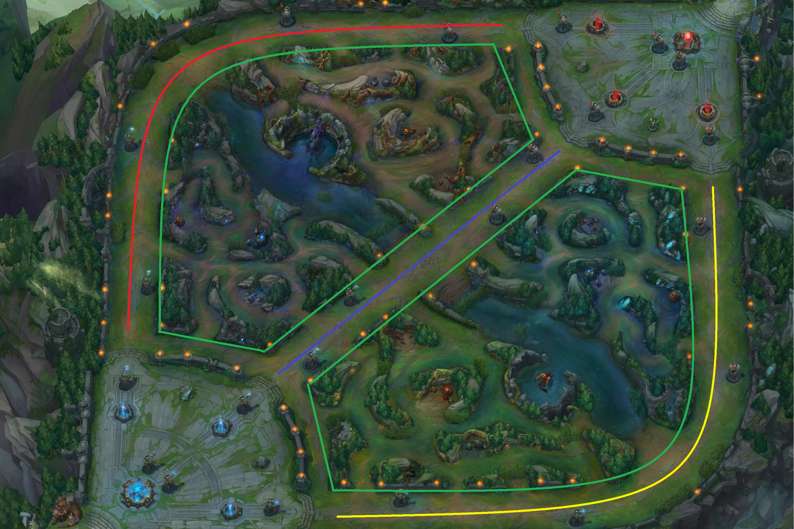

This page will feature a basic guide to the game as well as some strategies and general guidelines for each lane. Some of the terminology used might be foreign to you, but i have provided a key that will explain what each term means.
KEY
- Little creatures that walk along each lane and give you gold when you kill them.
- Farming refers to killing minions as its a steady source of gold which is the equivalent of nourishment
- Small area where the specific jungle monster is.
- Magic Resist.
- Lowers the cooldown on your ultimate ability.
- Buffing refers to making something stronger
- Teir of the tower refers to which the order the towers must be killed in each lane.
- 8 second channel that teleports you to your base.
- Attack Damage, increases damage of basic attacks and certain abilities.
- Ability Power, increases damage of magic abilities
- A summoner spell that does major damage to jungle monsters and heals you. Its mandatory for the Jungler to have this.
- A group of minions.
- Damage per Second.
The Map
This is Summoners Rift, the map that all normal gamemodes take place on. It is divided into 4 general areas, Top Lane (red), Mid Lane (blue), Bot Lane (yellow) and The Jungle (green).
Minions1 spawn every 30s starting from 1m5s. The minions are the primary source of consistent gold for the players apart from Jungle and Support. Supports go bot lane where the Bot Laner takes all the farm2. The Support gains their gold from their support item, there are 2 kinds, one that allows you to kill a minion and both you and the Bot Laner get the gold, and another which gives gold everytime you damage a champion. Jungles do not have any minions in the jungle so instead they kill the monsters in the jungle that spawn regularly. There are 3 camps3 per side of the jungle 2 regular camps and 1 buff. The red buff gives small damage over time on your attacks and healing, the blue buff gives mana over time. Each jungler kills the camps on their side of the map but occassionally you can kill the opposing junglers camps if the situation calls for it.
There are also 2 areas where key objectives spawn in between the blue team and red team jungle. Dragons spawn on the bot side and ,rift herald and baron spawn at the top. Dragons spawn every 5min and give a small permanent buff depending on the type of dragon. Mountain gives armour and MR4, infernal gives damage, ocean gives healing and cloud give ultimate ability haste5. The first 3 dragons are random but cannot be the same, and every dragon after that will be the same type as the 3rd. After a team kills 4 dragons they gain the dragon soul of the type of dragon the killed last. Each soul has a similar effect to the dragon but more significant, eg infernal causes a small explosion whenever you deal damage to an enemy on a short cooldown. After a soul is obtained the next dragon to spawn will be Elder Drake which gives a massive damage buff to whichever team kills it.
Rift Herald is a monster that when you kill you gain the ability to summon him and he will charge at the nearest tower dealing massive damage. Baron spawns after 20min and gives the team a giant buff6 and buffs the minions near them.
The last objectives left to cover are the towers. They are structures that will continuously fire shots at 1 target nearby, prioritizing minions. So to destroy towers you need minions near them so you dont take damage, however dealing damage to an enemy champion will cause the tower to hit you till you leave its range.To prevent the game escalating too fast for the first 14min the Teir 1 towers7 have tower plates, there are 5 plates on each tower which are basically 5 checkpoints on its HP. After destroying a plate you gain 150gold and the towers defence increases making it harder to get the next plate.
The game is won after you defeat towers in a line till you reach the nexus and destroy it. The nexus is the giant crystal in each base that you can start damaging after the 2 towers protecting it are destroyed. If you destroy the enemy nexus you win the game.
Gold
Gold as stated earlier is earned from minions/jungle camps. It can also be gotten from killing champions. Each kill gives you 300 gold which is the equivalent to 15 minions. The gold value of a player goes down when they die up to a minimum of 150 and it resets back to 300 when they get a kill. 150 gold is also divided evenly among anyone who got an assist on the kill. You can spend gold in the shop every time you recall8 to buy items. Items give you stats such as AD9, AP10 or HP. Items can also have actives which are usable abilities tied to an item, eg Zhonyas Hourglass puts you in stasis which makes you undamagable and untargetable, but you cannot move or attack for the duration.
In this next section i will cover what a champion in each position should do in a game. Remember this is just a baseline and it will vary game to game.
Jungle
The jungler takes camps in his jungle to gain gold, he looks at all the lanes and sees when an enemy moves up to far then goes there if hes nearby to try and punish them by killing them. They are also responsible for securing the jungle objectives, Drakes, Baron etc. The run smite11 which means they have to land the final blow on the objectives on it as only the team that kills an objective, not does the most damage gets it.
Top Lane
Top lane is the most isolated lane as junglers typically prioritize getting drakes which means they will be at the bot side of the map most of the time. As a top laner you want to win fights against the enemy top laner and kill the turret. After the first top lane tower is dead the top laner can move around the map easyer as it will take longer for the enemy minions to reach your tower. This allows you to give advantages to your team by having an extra member in fights. Another thing you can do is split push, which means you focus on a lane that is far from all the fighting and take towers there before anyone shows up or kill them if they do. This way your team can chose not to fight and let you gain the advantage for the team or when someone moves to match your push, you can teleport to the fight and win with a numbers advantage.
Mid Lane
As a mid laner you are most central in the map meaning both jungers are often nearby. This causes mid to have fights happen around it. Whenever a fight breaks out in the jungle the mid laner who can push the wave12 under tower can move first as if the other person moves with you they lose the minions which gives you a gold advantage. Because of this concept the midlaner whos ahead should push in the wave and move around the map with their jungler trying to win fights from the numbers advantage.
Bot Laner
The bot laner usually wants to stay in their lane with their support and get as many minions and kills as possible. You want to help your jungler take Drakes. In teamfights the most important thing to do as a Bot laner is to stay alive as you provide the most consistent DPS13 for the team.
Support
The support helps the Bot Laner get strong by helping them in the lane in 2 possible ways which depend on what champion you pick. You can provide healing for the Bot laner to and help them survive or you can set up kills for them by stunning opponents. In later fights you want to do the same thing as in lane.
Late Game
Later in the game the role you pick doesnt matter and it only matter what type of champion you pick so i will briefly cover what each kind of champion wants to do. ASSASSINS want to one shot the member on the enemy team that deals the most damage. TANKS want to provide as much utility as possible in a fight from their stuns as well as protect whoever does the most damage. CONTROL MAGES want to deal consistent damage while staying safe on the edge of fights. I already covered what supports and marksmen do in the Bot and Support section.
QUIZ TIME!
Now time for some fun, I will ask a few questions about what ive discussed to see if you already forget ;)